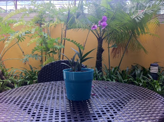

永不凋零的花
周六早晨，通过阿腊的介绍，约好了与艾丝和园艺小组会面。我在九时许提前抵达托福园，时间还早，便在室内户外转了几圈，留意园里的花花草草。露台鱼池附近，绿意盎然；入口走廊间，摆着几排盆栽；休憩角落的小桌上，放有一小株盛开的胡姬。走廊尽头，一群义工正在做维修，墙边靠满一整列空置的轮椅，拆散的零件撒了一地。我想：要如何认出艾丝呢？不如让他们来找我吧。便坐下弹起琴来。
过一会，艾丝就出现了，戴着手套，在走廊间搬弄盆栽。艾丝看起来有点面熟。原来，托福园中的几个义工项目，她都有参与，还曾在宣传影片中客串过一角。陪同她的义工有好几位，包括菲力，一名退休的胡姬花专家，还有一男一女两名医学院实习生。园艺小组每周来一、两次。周六早晨，他们全体出动，浇水、换土、施肥、修剪，把漂亮的花草展示在园中各处，其他的移到后面的花圃中养着。有时，他们还会选几株特别好看的小盆栽，放置在病房中，为冷冷的病房添加一点生气。可惜，最近登革传染病流行，为了防范未然，病房中的盆栽只好拿走。
除了种花，他们还在各个角落种菜。一丛菜豆，在阳光下长着，泛着健康的浅紫色。艾丝很高兴，问我要不要？有时，这些菜就送给了外籍护士，甚至交给厨房。大多时候，他们看着美丽的花草蔬菜，辛勤耕耘的果实，心情就亮丽起来了。
我和他们聊了一会，便回到钢琴前继续弹琴。心中闪过小桌上的胡姬，弹起李宗盛的“爱的代价”：
还记得年少时的梦吗？
像朵永远不凋零的花
陪我经过那风吹雨打
看世事无常 看沧桑变化
这首歌，我在几个人生阶段听过，每次的感受都不同。
第一次，我在威斯康辛读研究院。有一个暑假，我们须到肯萨斯去接机，因为机票租车费太贵，便驾了自己的小车，走那一千公里的路程。当中有一段，从芝加哥到圣路易斯，一下午连开五百公里。我和新婚妻子，奔驰在美国中西部的大平原，路上一望无际，过了一大片玉米田，还是一大片玉米田。车上，卡带反反复复转了一圈又一圈。我心中只是嘀咕：这路，何时才能走完？
第二次，十多年后，我在伦敦盖威克机场，等待乘撘廉航前往立陶宛公干。我挤在波罗地海人当中；他们白皮肤，棕色头发，高大魁梧。起飞后往下看，泰晤士河在暮色苍茫中，弯弯曲曲东流入海。两岸树叶，已被秋风染黄，凄清萧索。耳中，张艾嘉的歌声从iPod传来。她如此唱道：
也许我偶而还是会想他
偶而难免会惦记着他
就当他是个老朋友啊
也让我心疼 也让我牵挂
想起不久前毅然割绝，曾经坚持的理念，心中浮起一阵悲凉。机窗外，江阔云低，我坐在冰冷的钢铁机器里，呼啸飞往一个陌生的城市，像一只断雁，无语叫西风。而她还在继续唱：
只是我心中不再有火花
让往事都随风去吧
所有真心的痴心的话
仍在我心中 虽然已没有他！
第三次，就在托福园里。此时，心绪已逐渐平息，鬓将星星也。然而，穿梭在病房孱弱的身躯当中，目睹许多悲欢离合，有时仍不免怆然。
这真是一首好歌。有一次，李宗盛亲自唱，不到两段，哽咽起来，再也唱不下去。有人猜测，那是因为张艾嘉在他唱前追问：你有没有爱过我？也或许，华文歌坛的大厦，如红楼倾塌，大师也难掩沧桑之苦。真相是什么，除了当事人，有谁知道呢？连张艾嘉也说：关于我们的事，他们统统猜错了。重要的，是要选择如何再出发。是：一任阶前雨，点滴到天明？还是：老骥伏枥，志在千里？
我弹完这首歌，又跑去找艾丝他们。她拔了一把菜交给我，说：煮汤应该不错。我心想：拿回去交给太太处理吧。我握住一把青菜回头走，经过小桌，又看见那株胡姬花。
那花，自顾自盛开，什么都不理，仿佛天地洪荒，永远不凋零。

注：
艾丝客串的宣传影片在这里： 在2:10处，中间端茶的那个。
李宗盛唱“爱的代价”的录影在这里： 美丽的张艾嘉在最后含笑出现。